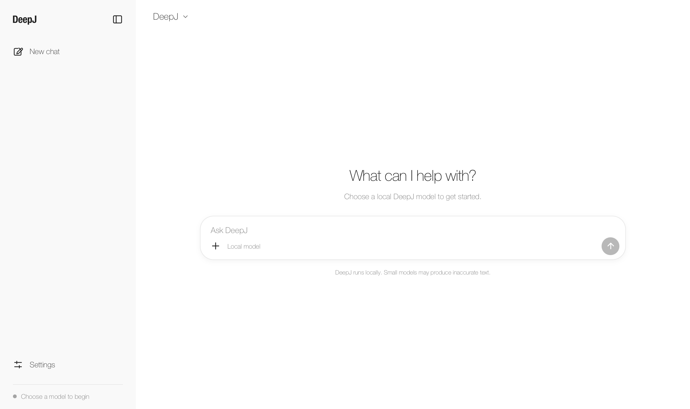
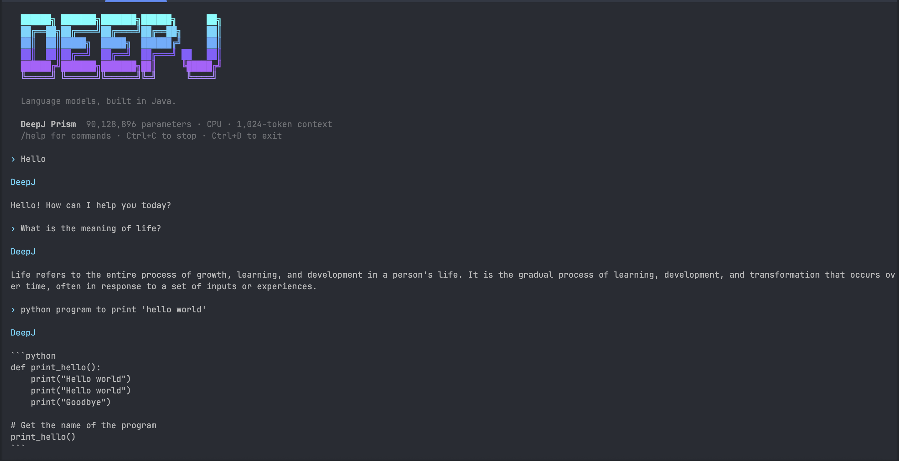

Tensors + gradients
N-dimensional tensors with FLOAT32 defaults, optional FLOAT16/BFLOAT16 storage, and automatic differentiation on CPU and Metal.
0.12.0-alpha · Java 20+
Learn, train, and inspect DeepJ Origin, Orbit, Prism, Nova, and Loop decoder models without leaving the JVM. Run anywhere on CPU or opt into Metal on Apple Silicon.
Install
Version 0.12.0-alpha requires Java 20 or newer. Maven Central publication is pending; build the GitHub release from source until it is available there.
View the GitHub release<dependency>
<groupId>io.github.kirstenali</groupId>
<artifactId>deepj</artifactId>
<version>0.12.0-alpha</version>
</dependency>Core library
DeepJ keeps the path from tensor math to text generation visible, with focused APIs and no hidden Python runtime.
N-dimensional tensors and optional compact dtypes are included in 0.12.0-alpha. See tensors and precision.
N-dimensional tensors with FLOAT32 defaults, optional FLOAT16/BFLOAT16 storage, and automatic differentiation on CPU and Metal.
DeepJ Origin, Orbit, Prism, Nova, and Loop decoder architectures behind a shared causal-LM API.
UTF-8 byte tokenization plus trainable, persistent byte-level BPE with special-token support.
AdamW, cosine schedules, gradient clipping, evaluation, file-backed datasets, and complete resumable checkpoints.
A pure Java CPU backend runs everywhere. Supported Apple GPUs can use fused Metal operations and custom FlashAttention kernels with FP32 accumulation.
Export weights, configuration, tokenizer files, and a model card as a bundle ready to share on Hugging Face.
Quick start
Download the model and tokenizer into one directory. DeepJ loads the saved settings and formats prompts automatically.
See the repository guideDeepJChat chat = DeepJChat.load(
Path.of("downloaded-model"));
String answer = chat.generate(
"What is a computer?");Architectures
DeepJ Origin
Learned positional embeddings, causal multi-head attention, LayerNorm, and GELU feed-forward layers.
DeepJ Orbit
Rotary position embeddings, causal multi-head attention, RMSNorm, and SwiGLU layers.
DeepJ Prism
Low-rank query and key/value projections with RoPE, RMSNorm, and SwiGLU.
DeepJ Nova
RoPE, RMSNorm and bias-free SwiGLU, with optional QK normalization and tied input/output embeddings.
DeepJ Loop
Shared layers are reused across passes, with grouped-query attention, RoPE, RMSNorm, and a bias-free SwiGLU MLP.
Each compact family offers a different Transformer design while using the same DeepJ training and generation APIs.
Desktop chat
Stream responses, choose a theme, adjust generation settings or use the See alternative responses button for the same prompt. Saved prompt formatting is applied automatically.

Build and start the desktop appCommand line
Streaming chat, themes, one-prompt generation, checkpoint inspection and backend diagnostics. Frisky uses the same saved instruction format as the desktop app; choose CPU-only execution with --backend cpu.

Build and use the CLIPublished model
A 90M-parameter DeepJ Prism model trained from scratch through pretraining, mid-training, and instruction fine-tuning, published with its BPE tokenizer and self-describing DeepJ checkpoint.
Although Frisky can produce coherent responses, it is a small experimental model and can repeat itself or make factual, reasoning, maths and coding errors.
Know the edges